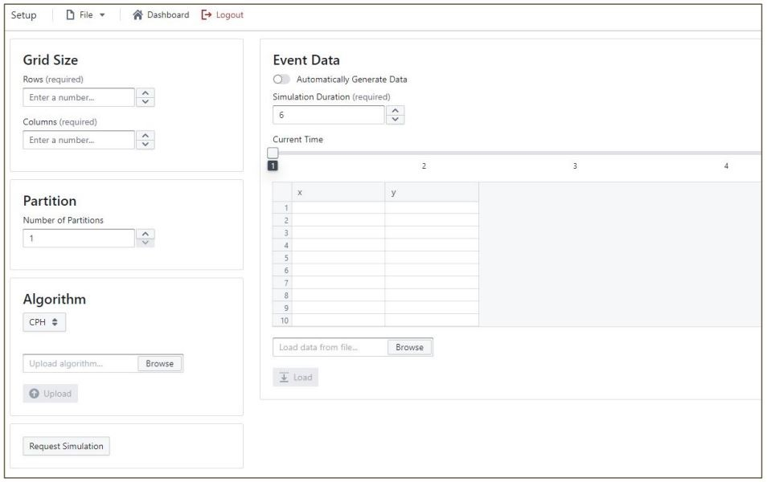
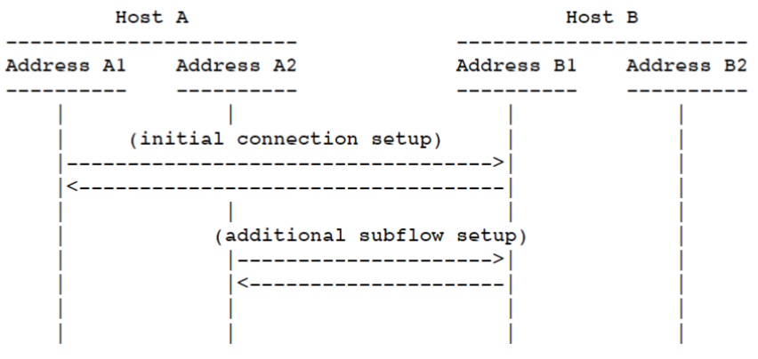

Senior Design: Collaborative Surveillance of
Large Geographical Area by Fleet of Drones
Testing drones in real-life situations can be challenging and expensive. Professionals in various fields of geographic surveying require visual and statistical data on how drone fleets respond to different phenomena, but the risks and costs associated with running actual tests can be prohibitive. As a result, many researchers in both academia and industry rely on simulations to test battery and energy usage under various conditions, as well as to assess the quality of coverage and average arrival times to interesting locations.
However, existing simulators are often custom-made and not easily adaptable for comparative studies. To address this limitation, our project aims to create a unified platform where different routing and dispatching algorithms for single drones or fleets of drones can be compared based on specific metrics, such as average or worst-case arrival times or coverage. Additionally, our project will feature a visualization tool that displays the drones' motion plan as they execute their mission over a chosen area of interest. This front-end functionality will be supported by a back-end host that generates actual data based on selected algorithms and input phenomenon-datasets.
Supporting Documents
https://sdmay23-50.sd.ece.iastate.edu/#Tools/Technologies Used:
- JavaScript
- React
- BlueprintJS
- Docker
- GitHub

Display of Simulation Page
Display of Setup Page
Implementation of Multipath TCP Protocol
In this project, I implemented a simplified version of MPTCP that focuses on using multiple paths and mapping data to those paths. The objective was to establish three TCP data subflows between a client and a server, without using the options field. Instead, an additional control TCP connection was established on which the DSS was sent.
To start, I created a client program that generated 992 bytes, numbered 0 through 991, containing 16 repetitions of ASCII digits 0 through 9, characters a to z, and characters A to Z. The client established four TCP connections with the server program: one control connection and three data connections representing the TCP subflows. Once each connection was established, it was forked as a child process. The parent process communicated with the child process using pipe().
The client sent data to the three TCP subflow child processes four bytes at a time in a cyclic manner, where the first 4 bytes were sent to the first subflow, the second 4 bytes were sent to the second subflow, and so on. The client sent a DSS on the TCP control connection for each segment sent on a TCP subflow to establish data mapping to the server. The mapping used from the 992 bytes to the sequence numbers on all three connections was written to a log file.
Additionally, I implemented a server process that accepted four connections: one control connection and three TCP data subflows. The server process also forked child processes for all three data TCP subflows, and the parent process communicated with the child processes using pipes or Unix sockets. The server process accepted data from all TCP subflows and performed the inverse mapping from the subflow to global sequence numbers. The server process displayed the received 992 bytes in order on the display monitor of the machine running the server. The mapping used from the sequence numbers received on all three connections to the 992 bytes was written to a log file as well.
Tools/Technologies Used:
- C Programming
- Multi-Process Programming
- TCP Socket Programming
- Linux Environment Development
Multipath TCP in the Stack
Example of MPTCP Usage
MIPS Single-Cycle Processor
During our project, we implemented a MIPS Single-Cycle Processor using structural VHDL. We started by drawing a high-level schematic of the interconnection between components, based on the skeleton code provided in the testing framework. We added the remaining high-level components we needed to support basic instructions, such as add, sub, and or. We also added any additional components and signals required by the set of instructions not included in the book's schematic, such as shifts and lui.
We created a control signals spreadsheet detailing the list of M instructions to be supported in our project alongside their binary opcodes and funct fields, if applicable. We created a separate column for each binary bit and a new column for the N control signals needed by our datapath implementation. This resulted in an N*M table where each row corresponds to the output of the control logic module for a given instruction. We implemented the control logic module using with/select statements in VHDL and created a testbench to test this module individually and show that our output matches the expected control signals.
We also implemented the fetch logic that updates the PC (i.e., the address of the next instruction to fetch from memory), supporting the different control flow-related instructions we were required to implement, such as jumps and branches. We drew a schematic of the fetch logic and created a testbench to verify its functionality.
Finally, we integrated all components and tested our MIPS Single-Cycle Processor using the automated testing framework provided. We loaded instruction and data memories with example programs and verified that our processor executed them correctly. We also debugged any issues that arose during testing and made necessary updates to our design.
Tools/Technologies Used:
- VHDL Programming
- MIPS Assembly Language
- Processor Design & Development
- GitHub